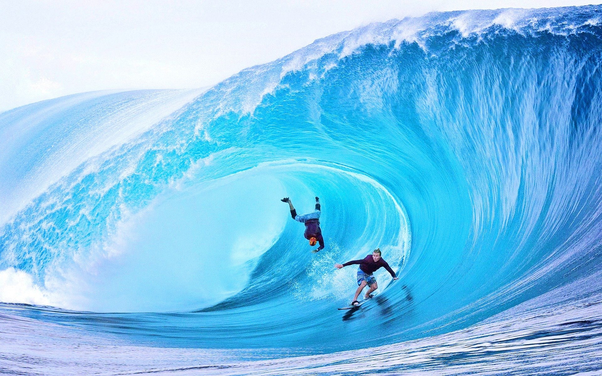

Big waves surfing

what is big wave surfing?
Big wave surfing is a discipline within surfing in which experienced surfers paddle into,
or are towed into, waves which are at least 20 feet (6.2 m) high, on surf boards known as "guns" or towboards.
[1] Sizes of the board needed to successfully surf these waves vary by the size of the wave as well as the technique the surfer uses to reach the wave.
A larger, longer board allows a rider to paddle fast enough to catch the wave and has the advantage of being more stable,
but it also limits maneuverability and surfing speed.
the biggest waves in the world
- Nazaré, Portugal
- Maui, Hawaii
- Tahiti, French Polynesia
- Tasmania, Australia
- Half Moon Bay, California

the biggest waves in the world
In 1992, big wave surfers such as Laird Hamilton and Darrick Doerner introduced a cross
over sport called tow-in surfing.[4] While many riders still participate in both sports, they remain very distinct activities. This type of surfing involves being towed into massive waves by jet ski, allowing for the speed needed to successfully ride. Tow in surfing also revolutionized board size, allowing surfers to trade in their unwield 12 ft. boards in favor of light' 7 ft boards that allowed for more speed and easier maneuverability in waves over 30 ft.
By the end of the 1990s, tow in surfing allowed surfers to ride waves exceeding 50 ft.
In a big wave wipeout, a breaking wave can push surfers down 20 to 50 feet (6.2 m to 15.5 m) below the surface.
Once they stop spinning around, they have to quickly regain their equilibrium and figure out which way is up.
Surfers may have less than 20 seconds to get to the surface before the next wave hits them. Additionally,
the water pressure at a depth of 20 to 50 feet can be strong enough to ruptur one's eardrums Strong currents and water action at those depths can
also slam a surfer into a reef or the ocean floor, which can result in severe injuries or even death